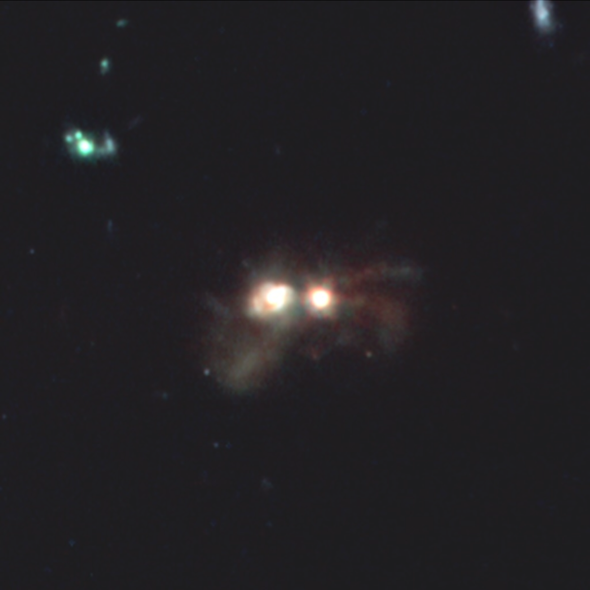
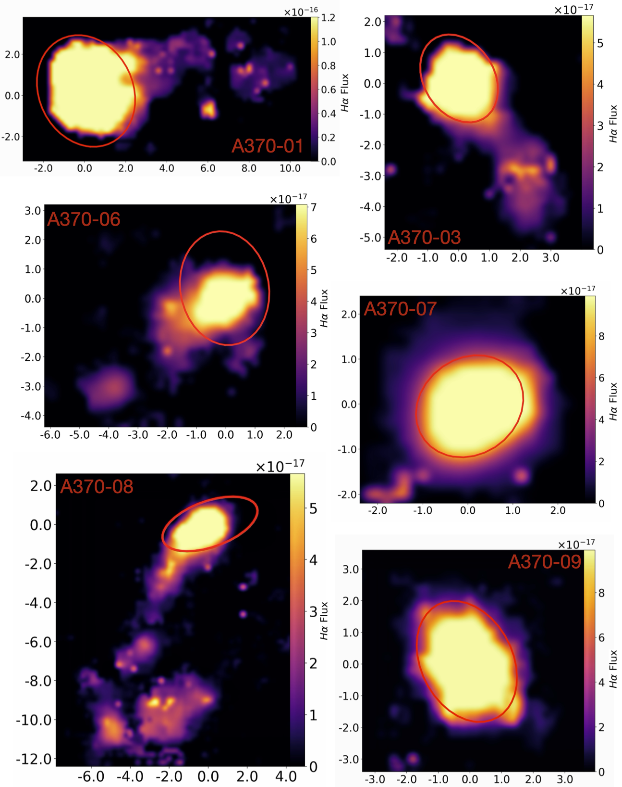
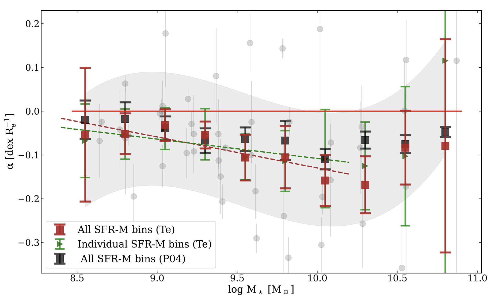

Research
Connecting galaxies to the gas and environments that shape their evolution, from nearby clusters to the early Universe.
My research asks how galaxies form, grow, and quench within their gaseous and large-scale environments. I combine integrated and spatially resolved spectroscopy with multi-band photometry to connect the properties of galaxies to the gas around them, using facilities including JWST, HST, VLT/MUSE, MaNGA, Keck/MOSFIRE, ALMA, and Lyα-forest tomography.
My work has progressed from environmental gas processing and chemical evolution, through interaction-driven transformation and quenching at cosmic noon, to measuring the gaseous cosmic web around high-redshift galaxies. A central theme throughout is that galaxy evolution cannot always be understood from the galaxies alone: the surrounding gas can carry information about the physical conditions in which galaxies assemble and evolve.

Massive quiescent galaxies are already present in substantial numbers by cosmic noon, yet the physical processes that shut down their star formation remain debated. I use JWST spectroscopy and photometry to reconstruct galaxy formation and quenching histories, asking how rapidly galaxies can transform and whether mergers, gas depletion, AGN activity, and environment play different roles.
In a collisional-ring galaxy at z = 1.61, I used the expanding ring as a physical clock to date the interaction to 47–96 Myr independently of the stellar-population modelling. Resolved spectroscopy and photometry then revealed a starburst in the ring host, which also contains an X-ray AGN, together with rapid quenching in the intruder. This provides a direct link between an interaction, star formation, and quenching on the corresponding timescale.
Galaxies do not evolve in isolation. In groups and clusters, the surrounding intracluster medium can remove gas from galaxies and alter their subsequent star formation and chemical evolution. Through the GASP ESO Large Programme, I use spatially resolved VLT/MUSE spectroscopy to study galaxies undergoing ram-pressure stripping across a range of environments.
Extending the analysis to 12 clusters at 0.3 < z < 0.6 and separating ram-pressure-stripped galaxies from non-stripped cluster members and coeval field controls, I found that the chemical enrichment tracks the stripping rather than cluster membership: stripped galaxies are approximately 0.2 dex more metal-rich than field counterparts at fixed stellar mass, while non-stripped cluster galaxies are consistent with the field population. The effect is particularly pronounced in lower-mass galaxies.
This work established an important part of my broader research programme: understanding environmental evolution by directly measuring the gas being exchanged between galaxies and their surroundings.

I also study how gas flows leave signatures in the chemical composition of galaxies. Using stacked spectra from 4,140 star-forming galaxies in the MaNGA survey, I recover faint auroral lines and derive direct-method metallicities as a function of stellar mass, star-formation rate, and galactic radius.
The analysis recovers a robust mass–metallicity relation but finds no evidence for the Fundamental Metallicity Relation when direct abundances are used, highlighting the importance of abundance-systematic uncertainties. I also measure direct-method metallicity gradients and quantify systematic offsets between ionisation zones at high metallicity. These diagnostics are relevant beyond the local Universe because nebular temperatures and metallicities affect the interpretation of the emission-line spectra of young galaxies.

The Blue Jay survey is a JWST Cycle 1 programme (GO 1810; PI: Sirio Belli) using NIRSpec spectroscopy of 141 galaxies at 1.7 < z < 3.5 in the COSMOS field, together with deep NIRCam imaging. The survey provides a detailed view of the stellar populations, ionised gas, morphology, and star-formation histories of galaxies during cosmic noon.
I work with the integrated and spatially resolved photometric data, combining JWST/NIRCam and HST imaging with spectroscopy. My analysis includes image registration and resampling, background subtraction, source masking and segmentation, PSF characterisation and homogenisation, aperture and enclosed-energy corrections, photometric calibration, and uncertainty propagation including correlated noise from resampling.
Across Blue Jay and my other high-redshift work, I use Prospector with non-parametric star-formation histories to fit photometry and spectroscopy jointly and reconstruct galaxy formation and quenching histories.
My current first-author work asks a simple question: is galaxy number density sufficient to describe environment while large-scale structures are still assembling? I combine JWST/NIRSpec spectroscopy of 141 Blue Jay galaxies with 57 massive galaxies from the DAWN JWST Archive, comparing their galaxy-number-density environment from COSMOS-Web with the neutral-hydrogen field from LATIS Lyα-forest tomography.
The two environmental tracers agree for roughly 65% of massive galaxies at 2.2 < z < 2.8, but the outliers reveal two physically distinct regimes. One is galaxy-rich but weak in neutral hydrogen and coincides with a massive Hyperion core, where the low neutral-hydrogen signal likely reflects ionisation rather than an absence of gas. The other is galaxy-poor but gas-rich, lies within approximately 20 cMpc of Hyperion, and contains nearly all of the AGN and most of the detected neutral outflows.
I refer to these gas-rich, galaxy-poor regions as developing environments: large-scale structures in which massive haloes are actively assembling galaxies but have not yet reached the mature, galaxy-dense state traced by conventional environment measures. The result suggests that galaxy counts alone can miss physically distinct environments during the assembly phase of structure.
JWS3 (JWST Single Shutter Survey) is an upcoming JWST Cycle 5 large programme that will obtain deep NIRSpec spectroscopy for more than 600 galaxies at z ∼ 4–9. I am a core member and coordinator of the survey (PI: Sirio Belli), helping coordinate the collaboration and its scientific exploitation.
JWS3 extends my environmental work into the epoch when galaxies and their large-scale structures were still rapidly assembling. The spectroscopy will provide constraints on stellar populations, star-formation histories, ionised gas, metallicities, and other physical conditions across a large high-redshift sample. I am particularly interested in connecting these galaxy properties to the environments in which the galaxies formed: when environmental effects first emerge, how they influence galaxy growth and quenching, and how early galaxy assembly relates to the surrounding gaseous cosmic web.
Together with the Blue Jay survey and my current dual-tracer environmental analysis, JWS3 forms the next step in a continuous programme: from measuring how gas is processed in mature environments, to understanding galaxy transformation at cosmic noon, to observing the emergence of galaxies and their environments during the first billion years.

The next stage of my research is to follow the galaxy–gas connection to higher redshift, where the distinction between a galaxy and its environment becomes increasingly difficult to separate. I want to combine JWST spectroscopy and imaging with independent tracers of the gaseous cosmic web, including Lyα absorption and, where available, ALMA observations of the cold interstellar medium.
The goal is to determine how neutral-gas reservoirs, large-scale structure, and galaxy assembly are coupled during the epoch of reionisation: whether the gas surrounding young galaxies primarily traces their environment, fuels their growth, or also regulates the escape of ionising radiation.
A selection of recent and representative research outputs.